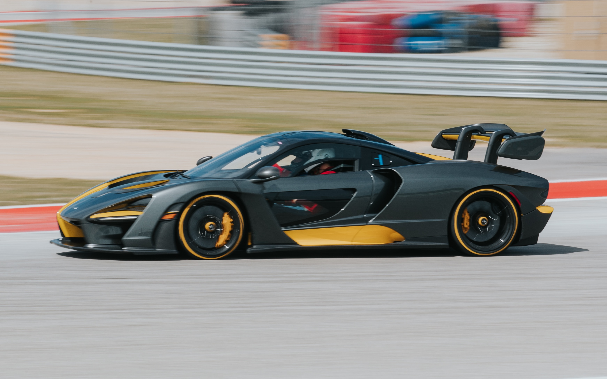

- Ferrari
- Lamborghini
- Mclaren
Mclaren

1989년에 설립된 영국의 슈퍼카 제조사.
대부분 어떠한 그룹에 속해있는 많은 자동차 제조사와 다르게 어떠한 그룹에도 속해있지 않은 몇 안되는 독자 기업 중 한 곳이다.
포드 머스탱을 기초로 한 개조모델인 M81 머스탱을 시작으로 BMW 760의 V12 엔진을 개조해서 만든 슈퍼카 맥라렌 F1을 개발하여 세상에 이름을 알렸다.
맥라렌 F1은 부가티, 코닉세그와 같은 하이퍼카 브랜드가 등장하기 전까지 가장 빠른 양산차 타이틀을 가지고 있었다.
그러나 맥라렌 F1은 터보차저에 의존하지 않는 자연흡기 방식의 양산차로서는 출시 20년이 지난 지금도 세계에서 가장 빠른 차량이다.
이후 맥라렌 레이싱팀, 메르세데스-벤츠와 협력해 맥라렌 SLR을 탄생시켰다.
외래어 표기법에 따라 표기하면 '매클래런'이 되며, 실제로 원음에 훨씬 가깝다.
한국에서는 관용적으로 '맥라렌'으로 표기하는데, 한국어의 자음동화/비음화 현상에 의해 '맹나렌'이라는 원음과 동떨어진 음으로 발음되는 문제가 있다.